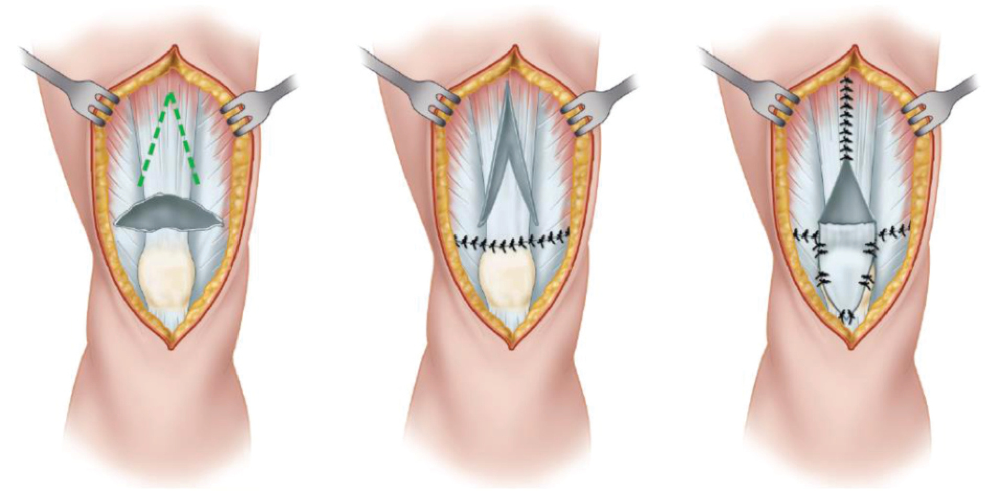

Tendão quadricipital crôniconº 1074

Na lesão crônica do tendão quadricipital, a técnica demonstrada na imagem a seguir é a de
Tendão quadricipital crôniconº 1074
V invertido de espessura total no tendão acima da ruptura, rebatido para baixo e fechado em Y: ganha comprimento na ruptura crônica retraída.
Scuderi só reforça a sutura. Krackow é um ponto de sutura.
Faltam
75 dias
Questão grátis todo dia. O caminho está no nosso perfil.
ortoquestoes.com.br